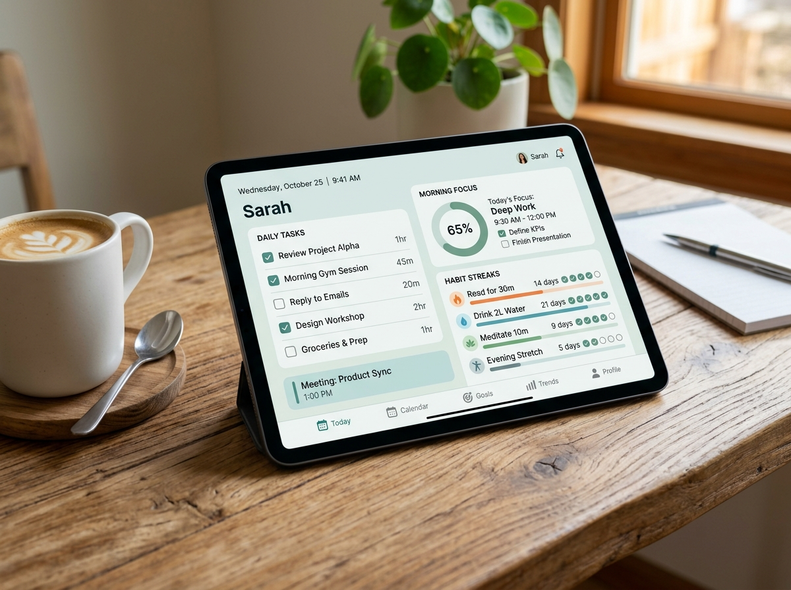
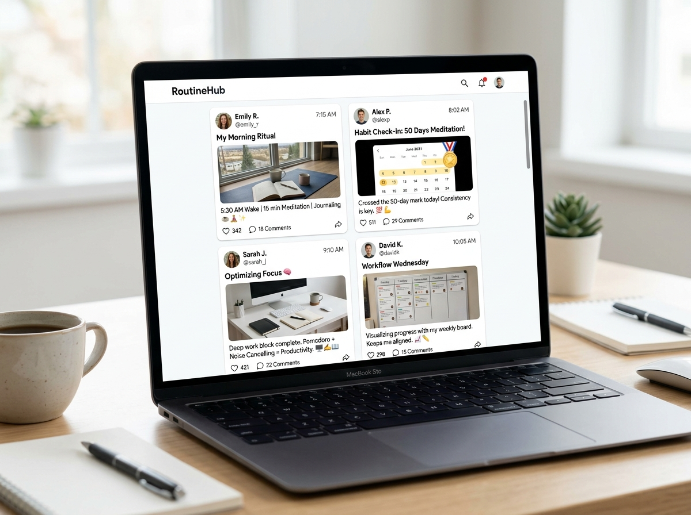

A clean dashboard to plan your morning, check off daily tasks, and build good habits.
Write down what matters today and cross it off when done.
Save your thoughts, ideas, and reminders in seconds.
Stay consistent every day and watch your progress grow.


Get inspired by real morning routines and daily habits shared by people like you.
Discover how productive people start their mornings.
Post your achievements and motivate others to keep going.
Learn new habits and stay inspired every single day.